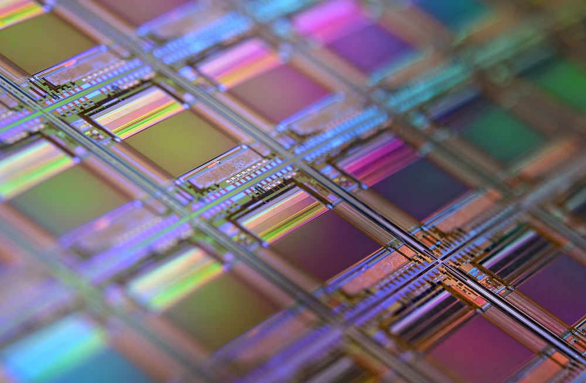
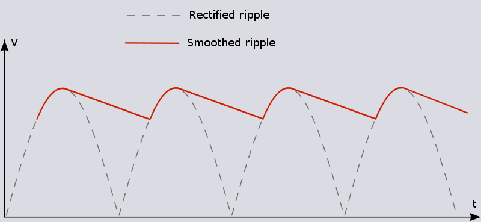
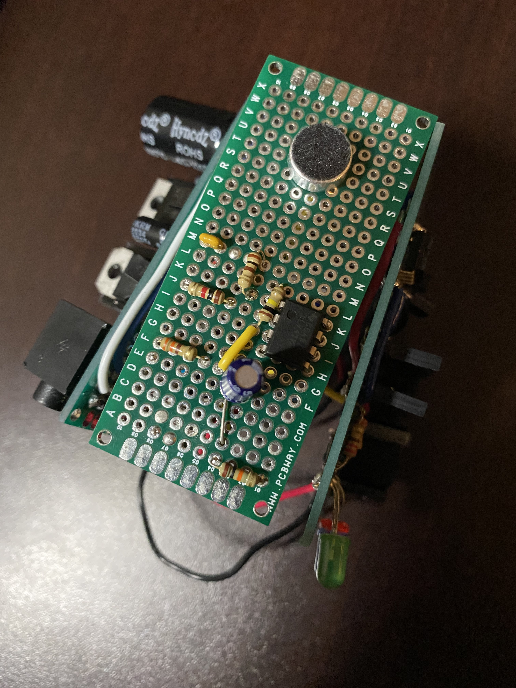

Transistor wafer. Source: https://unsplash.com/s/photos/wafer
I thoroughly enjoyed this class!
I learnt how transistors are made and how they behave.
As a computer enthusiast learning how silicon can be turned into a component like a CPU through various rounds of doping semiconductors is very interesting.
The class also went in depth of how we can use combinations of circuit elements like diodes,
capacitors, or transistors to make a variety of things like rectifiers, switches, and more!
• My biggest take away from this course was learning how to design a circuit with something other than resistors.
I now can create circuits with things like frequency filters and analog switches,
which my group and I incorporated into our project this semester.
• We utilized the Analog Comparator (AC), the Analog to Digital Converter (ADC),
and Digital to Analog Converter (DAC) peripherals in the AVR chip to convert and
compare analog/digital signals.

What a rectified signal can look like. Source: https://i.stack.imgur.com/IRvyk.png
In my ILS project we used a high pass filter with a cut off frequency of 500hz
and a low pass filter with a cut off frequency of 25000hz to minimize the amount
of chatter that the microphone would pick up and focus only on the frequency from our
hands clapping. We also implemented a mute function which was controlled by the AVR chip
which when a specific pin was driven high a BJT would allow current to flow, therefore
driving the speakers, and when the pin was set low, no current flowed into the BJTs and
the speakers would shut off. Below is an image of the frequency filter circuit and a
signal amplifier for the microphone, if you would like to learn more about my ILS project refer to the ILS Project portfolio post.

High and low pass filter circuit. Source: Group LC3B